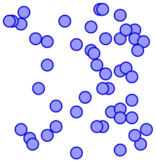
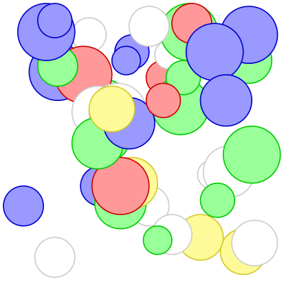

The TikZ and PGF Packages
Manual for version 3.1.10
Mathematical and Object-Oriented Engines
95 Additional Mathematical Commands¶
Instead of parsing and evaluating complex expressions, you can also use the mathematical engine to evaluate a single mathematical operation. The macros used for many of these computations are listed above in Section 94.3. pgf also provides some additional commands which are shown below:
95.1 Basic arithmetic functions¶
In addition to the commands described in Section 94.3.1, the following command is provided:
-
\pgfmathreciprocal{⟨x⟩} ¶
Defines \pgfmathresult as \(1\div \meta {x}\). This provides greatest accuracy when x is small.
95.2 Comparison and logical functions¶
In addition to the commands described in Section 94.3.5, the following command was provided by Christian Feuersänger:
-
\pgfmathapproxequalto{⟨x⟩}{⟨y⟩} ¶
Defines \pgfmathresult 1.0 if \(\rvert \meta {x} - \meta {y} \lvert < 0.0001\), but 0.0 otherwise. As a side-effect, the global boolean \ifpgfmathcomparison will be set accordingly.
95.3 Pseudo-Random Numbers¶
In addition to the commands described in Section 94.3.6, the following commands are provided:
-
\pgfmathgeneratepseudorandomnumber ¶
Defines \pgfmathresult as a pseudo-random integer between 1 and \(2^{31}-1\). This uses a linear congruency generator, based on ideas of Erich Janka.
-
\pgfmathrandominteger{⟨macro⟩}{⟨minimum⟩}{⟨maximum⟩} ¶
This defines ⟨macro⟩ as a pseudo-randomly generated integer from the range ⟨minimum⟩ to ⟨maximum⟩ (inclusive).

\begin{pgfpicture}
\foreach \x in
{1,...,50}{
\pgfmathrandominteger{\a}{1}{50}
\pgfmathrandominteger{\b}{1}{50}
\pgfpathcircle{\pgfpoint{+\a pt}{+\b pt}}{+2pt}
\color{blue!40!white}
\pgfsetstrokecolor{blue!80!black}
\pgfusepath{stroke, fill}
}
\end{pgfpicture}
-
\pgfmathdeclarerandomlist{⟨list name⟩}{{⟨item-1⟩}{⟨item-2⟩}...} ¶
This creates a list of items with the name ⟨list name⟩.
-
\pgfmathrandomitem{⟨macro⟩}{⟨list name⟩} ¶
Select an item from a random list ⟨list name⟩. The selected item is placed in ⟨macro⟩.

\begin{pgfpicture}
\pgfmathdeclarerandomlist{color}{{red}{blue}{green}{yellow}{white}}
\foreach \a in
{1,...,50}{
\pgfmathrandominteger{\x}{1}{85}
\pgfmathrandominteger{\y}{1}{85}
\pgfmathrandominteger{\r}{5}{10}
\pgfmathrandomitem{\c}{color}
\pgfpathcircle{\pgfpoint{+\x pt}{+\y pt}}{+\r pt}
\color{\c!40!white}
\pgfsetstrokecolor{\c!80!black}
\pgfusepath{stroke, fill}
}
\end{pgfpicture}
-
\pgfmathsetseed{⟨integer⟩} ¶
Explicitly sets the seed for the pseudo-random number generator. By default it is set to the value of \time\(\times \)\year.
95.4 Base Conversion¶
pgf provides limited support for conversion between representations of numbers. Currently the numbers must be positive integers in the range \(0\) to \(2^{31}-1\), and the bases in the range \(2\) to \(36\). All digits representing numbers greater than 9 (in base ten), are alphabetic, but may be upper or lower case.
In addition to the commands described in Section 94.3.7, the following commands are provided:
-
\pgfmathbasetodec{⟨macro⟩}{⟨number⟩}{⟨base⟩} ¶
Defines ⟨macro⟩ as the result of converting ⟨number⟩ from base ⟨base⟩ to base 10. Alphabetic digits can be upper or lower case.
4223
\pgfmathbasetodec\mynumber{107f}{16} \mynumber
Note that, as usual in TeX, the braces around an argument can be omitted if the argument is just a single token (a macro name is a single token).
25512
\pgfmathbasetodec\mynumber{33FC}{20} \mynumber
-
\pgfmathdectobase{⟨macro⟩}{⟨number⟩}{⟨base⟩} ¶
Defines ⟨macro⟩ as the result of converting ⟨number⟩ from base 10 to base ⟨base⟩. Any resulting alphabetic digits are in lower case.
ffff
\pgfmathdectobase\mynumber{65535}{16} \mynumber
-
\pgfmathdectoBase{⟨macro⟩}{⟨number⟩}{⟨base⟩} ¶
Defines ⟨macro⟩ as the result of converting ⟨number⟩ from base 10 to base ⟨base⟩. Any resulting alphabetic digits are in upper case.
FFFF
\pgfmathdectoBase\mynumber{65535}{16} \mynumber
-
\pgfmathbasetobase{⟨macro⟩}{⟨number⟩}{⟨base-1⟩}{⟨base-2⟩} ¶
Defines ⟨macro⟩ as the result of converting ⟨number⟩ from base ⟨base-1⟩ to base ⟨base-2⟩. Alphabetic digits in ⟨number⟩ can be upper or lower case, but any resulting alphabetic digits are in lower case.
db
\pgfmathbasetobase\mynumber{11011011}{2}{16} \mynumber
-
\pgfmathbasetoBase{⟨macro⟩}{⟨number⟩}{⟨base-1⟩}{⟨base-2⟩} ¶
Defines ⟨macro⟩ as the result of converting ⟨number⟩ from base ⟨base-1⟩ to base ⟨base-2⟩. Alphabetic digits in ⟨number⟩ can be upper or lower case, but any resulting alphabetic digits are in upper case.
31B
\pgfmathbasetoBase\mynumber{121212}{3}{12} \mynumber
-
\pgfmathsetbasenumberlength{⟨integer⟩} ¶
Sets the number of digits in the result of a base conversion to ⟨integer⟩. If the result of a conversion has less digits than this number, it is prefixed with zeros.
00001111
\pgfmathsetbasenumberlength{8}
\pgfmathdectobase\mynumber{15}{2} \mynumber
-
\pgfmathtodigitlist{⟨macro⟩}{⟨number⟩} ¶
This command converts ⟨number⟩ into a comma-separated list of digits and stores the result in ⟨macro⟩. The {⟨number⟩} is not parsed before processing.
\pgfmathsetbasenumberlength{8}
\begin{tikzpicture}[x=0.25cm, y=0.25cm]
\foreach \n [count=\y] in
{0, 60, 102, 102, 126, 102, 102, 102, 0}{
\pgfmathdectobase{\binary}{\n}{2}
\pgfmathtodigitlist{\digitlist}{\binary}
\foreach \digit [count=\x, evaluate={\c=\digit*50+15;}] in
\digitlist
\fill [fill=black!\c] (\x, -\y) rectangle
++(1,1);
}
\end{tikzpicture}
95.5 Angle Computations¶
Unlike the rest of the math engine, which is a “standalone” package, the following commands only work in conjunction with the core of pgf.
-
\pgfmathanglebetweenpoints{⟨p⟩}{⟨q⟩} ¶
Returns the angle of a line from ⟨p⟩ to ⟨q⟩ relative to a line going straight right from ⟨p⟩.
45.0
\pgfmathanglebetweenpoints{\pgfpoint{1cm}{3cm}}{\pgfpoint{2cm}{4cm}}
\pgfmathresult
-
\pgfmathanglebetweenlines{⟨\(p_1\)⟩}{⟨\(q_1\)⟩}{⟨\(p_2\)⟩}{⟨\(q_2\)⟩} ¶
Returns the clockwise angle between a line going through \(p_1\) and \(q_1\) and a line going through \(p_2\) and \(q_2\).
270.0
\pgfmathanglebetweenlines{\pgfpoint{1cm}{3cm}}{\pgfpoint{2cm}{4cm}}
{\pgfpoint{0cm}{1cm}}{\pgfpoint{1cm}{0cm}}
\pgfmathresult